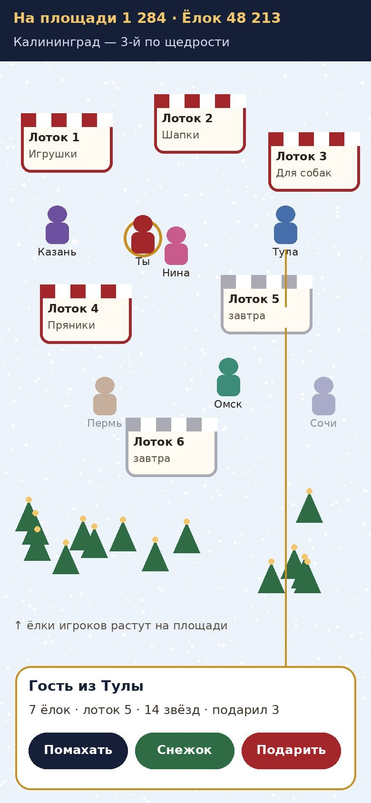

Короткий ответ
- Общий вид можно оставить и не платить за него как за онлайн-игру. Предлагаю площадь «как живая»: другие игроки — настоящие, со своими героями, городами и ёлками, но двигаются не синхронно в реальном времени. По расходам это почти как «только рейтинги».
- Место и память тут почти ни при чём. Дорого держать постоянное соединение с каждым игроком, чтобы все видели друг друга без задержки. Это и есть разница в цене.
- Где жить: сайт плюс мини-приложение в MAX и VK. Приложение в сторах не нужно.
- На старте по моей оценке: 5–10 тыс. ₽ на хостинг и домен плюс ~$25–30 на картинки. Реклама по желанию.
Как это выглядит

- Ходьба: нажимаешь на место, и герой идёт туда. Одной рукой, на любом телефоне.
- Лоток = уровень. Подходишь к лотку и попадаешь на его прилавок крупно: там 30 предметов и зум. Это наш поиск предметов.
- Новый лоток каждый день: «Открылся лоток 5!», и все идут к нему.
- Другие игроки: нажал на героя — видишь город, сколько ёлок нарядил, на каком лотке, сколько подарил.
- Действия без чата: помахать, кинуть снежок, подарить игру. Свободного чата нет: так не нужна модерация и никто никого не обидит.
- Ёлки игроков растут на площади. К концу декабря площадь превращается в лес наряженных ёлок, и это виден общий прогресс.
Три варианта по цене
| А. Только рейтинги | Б. Площадь «как живая» ⭐ | В. Живая в реальном времени | |
|---|---|---|---|
| Что видит игрок | списки, счётчики, карта подарков | площадь с настоящими игроками, они гуляют сами по себе; друзья появляются рядом через несколько секунд | все видят друг друга без задержки, ходят вместе |
| Сервер | маленький, платишь за запросы | тот же маленький, раз в 15–30 секунд подгружает свежих игроков | постоянные соединения, несколько серверов |
| Расходы на сервер в декабре (оценка при 300 тыс. игроков) | 1–5 тыс. ₽ | 2–6 тыс. ₽ | 15–30 тыс. ₽ и выше |
| Разработка | быстро | +2–3 дня к А | +6–8 дней к А и нагрузочные тесты |
| Риск в декабре | низкий | низкий: если сервер устал, площадь просто реже обновляется | высокий: при наплыве игроков может лечь в самый пик |
Предлагаю вариант Б. Он даёт главное из твоей идеи: «я на площади, вокруг люди из разных городов, нажал — увидел, сколько у него ёлок». При этом стоит как рейтинги. Помахал или кинул снежок — человек увидит это, когда откроет игру: «Тебе кинул снежок гость из Тулы». Игру строим так, чтобы позже можно было включить настоящую прогулку вживую, например только с друзьями, если игра взлетит.
Куда поместится такой формат
| Где | Зачем |
|---|---|
| Сайт на своём домене | Основа. Одна ссылка открывается в любом браузере и в любом мессенджере. Здесь же оплата через ИП. |
| MAX, мини-приложение | Главный мессенджер для рассылки подарков: по данным VK на октябрь 2026, 109 млн человек в месяц и 90 млн в день. Открывается прямо из чата без установки. Условия публикации на платформе MAX для партнёров уточню завтра. |
| VK, мини-приложение | Друзья, сообщества, городские паблики. Используем для распространения, а оплату принимаем на сайте. |
| Telegram | Та же ссылка. С начала 2026 года Telegram в России замедляют, но аудитория всё ещё большая. |
| Яндекс Игры | Дополнительный поток игроков. Аудитория — в основном женщины, много людей старше 55. |
| Приложение в App Store или Google Play | Не нужно. Проверка занимает недели, человеку надо устанавливать (половина отвалится), а покупки внутри приложений в России работают плохо. |
Важно: WhatsApp в России фактически не работает с конца 2025 года, поэтому кнопку «Отправить в WhatsApp» не делаем. Основные кнопки: MAX, VK, Telegram, «Скопировать ссылку».
Сколько денег на старте
Мои оценки по сегодняшним ценам. Точно посчитаю, когда выберем вариант.
| Статья | Вариант Б | Комментарий |
|---|---|---|
| Домен .ru | несколько сотен ₽ в год | проверим свободные названия |
| Раздача файлов игры (CDN) | ~1,5–5 тыс. ₽ | 0,96 ₽ за ГБ у Yandex Cloud CDN. Простая графика — лёгкая игра: 300 тыс. игроков ≈ 1,5–5 ТБ |
| Сервер и база | 2–6 тыс. ₽ в месяц | платишь за запросы, в ноябре почти ноль |
| Картинки в ChatPlace | ~$15–30 | с простой графикой ближе к $15. Сейчас на балансе $6,52, лимит обновится 7 декабря |
| Приём оплат | 0 ₽ на старте | обычно без абонплаты, процент с каждого платежа |
| Реклама и посевы | по желанию | можно стартовать бесплатно: подарки, свои чаты, паблики |
| Итого на старте | ~5–10 тыс. ₽ + картинки (вариант В: ещё +15–30 тыс. ₽ в декабре) | |
Чем проще графика, тем дешевле всё: меньше картинок, легче игра, меньше трафик, быстрее открывается на слабом телефоне и при плохом интернете. Красоту даём механикой: салютами, снежками, лесом ёлок, картой подарков.
Что нужно от тебя завтра
1. Вариант Б («как живая») — ок?
2. Аккаунт в Yandex Cloud на твоё ИП: есть или заводим? Я подготовлю всё остальное, но регистрацию и оплату делаешь ты.
3. Бизнес-аккаунт в MAX и сообщество в VK под игру: заводим?
4. Пополнить ChatPlace на $15–30.